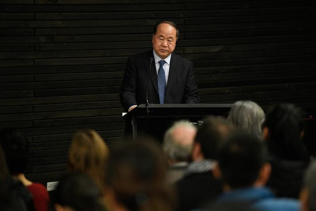

2019.10.10
北京日报客户端今日推出庆祝新中国成立70周年特别报道《人民》之文艺篇。新中国成立之初，毛泽东主席即为中国社会主义文艺定下了“百花齐放”的发展方针。今天我们将从戏剧、文学、影视等七个方面为读者梳理呈现中国文艺的繁荣盛景。
中国是文化大国，亦是文学大国。中国文学的影响力能否突破语言与文化的藩篱，在世界文学圈占有一席之地？习总书记在文艺工作座谈会上的讲话中提到，国际社会对中国的关注度越来越高，外国人想了解中国，想知道中国人的世界观、人生观、价值观……文艺工作者要讲好中国故事，要向世界推介我国优秀文化艺术、让国外民众在审美过程中感受魅力，加深对中华文化的认识和理解。伴随着中国经济硬实力的提升，经过几代人的努力，如今作为软实力的代表，中国文学也迎来了收获期。
2012年，中国文坛被一则重磅新闻激起了一片浪花，瑞典文学院决定，将当年的诺贝尔文学奖颁给中国作家莫言。这是中国籍作家首次获得这一奖项。诺贝尔奖的含金量和影响力自不必讳言，尤其在中国，在相当长的一段时间里，诺贝尔奖成为和申奥、入世一样令人们翘首以盼的目标。在国家经济实力不断增长、综合国力大幅提升的同时，人们渴望在文化和科技“软实力”上得到来自诺贝尔奖这样国际权威奖项的认可。
从1990年代开始，“中国何时能出现第一个诺贝尔奖获得者”就成为媒体和舆论不断抛出的问题，而在诺贝尔奖诸多奖项中，人们最不看好的就是文学奖，毕竟，对于文学的评价有着语言、文化背景、意识形态上的障碍，中国文学想要跨越这些障碍而被诺贝尔奖所青睐，看起来似乎还颇为遥远。令人们意外的是，中国籍人士首摘诺奖就是文学奖，而且还是一位平素以来相当低调的作家。
为什么是莫言？著名评论家谢有顺在莫言获奖之后，被记者问到最多的问题就是这句话。而谢有顺往往先反问记者：“为什么不是莫言？如果不是莫言，那你告诉我，中国有哪一个作家比莫言更合适得这个奖？”谢有顺认为，莫言的作品之所以能够从中国当代文学中脱颖而出，被跨语言、跨文化的评委所欣赏，并非因为他对“魔幻现实主义”小说的承袭，而是因为他的文字根植于中国乡土，吸纳了中国本土的叙事资源。“《檀香刑》是一部莫言转型期的、同时又有中国气度的大作品，在这部作品中，莫言把西方作家对他的影响内在到了自己血液里，读者在他这作品中再也读不到哪个大师的身影了。同时，他对本土叙事资源的再利用，对一种民间形式的借鉴，对一种中国经验的表达，都表明他有一种先觉，就是如何重新在本民族的语言和传统中为自己的写作定位。”
实际上，早在2006年，北京大学文学系教授陈晓明就写了一篇题为《中国谁最靠近诺贝尔奖》的文章，他在这篇带有预测性的文章中把莫言列为第一推荐对象。他在文章中说：“在莫言的小说中可以找到当代国际学界最热门的所有的主题，包括传统文化、地域特色、人性的怪异、历史的异化、民族认同等等，这些既是现代性的表达，又充满后现代的蛊惑人心的意味。”这些连接起了乡土中国的本土叙事和现代主义的艺术手法，成为莫言能够不局限于中国、在当今世界获得广泛注意的重要原因。
在许多人看来，莫言的文学受拉美魔幻现实主义小说影响很深。莫言自己也承认，马尔克斯的作品改变了自己的文学观。但陈晓明认为，中国传统艺术中也有非常强的魔幻色彩，莫言一方面吸取拉美西方现代艺术，一方面也依然继承了中国传统元素，在此基础上构建起了他的高密东北乡。“没有任何一个民族像中国一样，能敞开胸怀大量学习西方文化，包括文艺、经济、法律、自然科学等的方方面面。然而，经过一百多年的开放性学习，中国开始变得很困惑，到底如何才能形成属于自己的文化价值和文学上的独特现代风格？而从莫言角度来看，他就很有中国特点。”
如果说莫言“文学的胜利”建立在对传统文学题材的深耕之上，那么刘慈欣的出现则无疑拓展了中国当代文学的宽度。2015年，刘慈欣凭借《三体》获第73届世界科幻大会颁发的雨果奖最佳长篇小说奖，这是亚洲人首次获得这一科幻文学界的最高奖，也是中国科幻走出国门走向世界的重要一步。
科幻文学的发展与一个国家的科学技术水准密切相连，科幻文学不是中国文学的传统类别，长久以来处于边缘状态。刘慈欣的人生与他的作品一样传奇。作为一名水利系工科生，他的本职工作是山西娘子关电厂的计算机工程师。工作之余，他在这个平凡的、边缘的小镇里畅想宇宙的浩渺与人类文明的未来，写下了一部部想象力惊人的科幻力作。这也是改革开放以后中国文坛的一种现象折射，即越来越多的作家非文学科班出身，反而是以业余的身份声名鹊起。如刘慈欣、韩松、二月河、当年明月等。他们往往能够突破传统文学的桎梏，以独特的思维角度和表现形式呈现出文学新的气象。
刘慈欣的《三体》三部曲被普遍认为是中国科幻文学的里程碑之作，将中国科幻推上了世界的高度。在第73届雨果奖的五轮投票中，《三体》始终排在首位。而在《三体》获奖之前，中国科幻作品被翻译到美国的可谓屈指可数，美国读者对于中国科幻文学一无所知。《冰与火之歌》的作者乔治·马丁对《三体》赞不绝口：“在雨果奖半个世纪的历史中，很少有非英文原创作品获得提名，中国的作品则是从未有过，《三体》在这方面是个突破。”
中国的科幻文学起步较晚，难免会被人与西方业已成熟的科幻文学作对比。但刘慈欣认为，中国科幻虽然难免会借鉴西方科幻艺术，但骨子里还是有很深的中华文化和特色。刘慈欣的中短篇小说更是蕴含了大量中国文化与中国社会的折射。比如《乡村教师》中，他借助外星人探测地球文明的视角，歌颂了一位坚守在中国乡村耗尽生命教书育人的老师。而《朝闻道》里科学家们为了获得宇宙终极答案不惜牺牲性命的行为，正是《论语》里中国传统知识分子“朝闻道，夕死可矣”精神的重新演绎。
美国《纽约客》杂志将刘慈欣比喻为“中国的阿瑟·克拉克爵士”，并评价“刘慈欣的独特之处，并不仅仅在于文化特色。他的故事是一则则关乎人类进步的神话——想象具体，但构局抽象，近似寓言”。
去年我的《长安十二时辰》的版权输出到泰国，在与泰国版权方接触后，我发现泰国读者需要的，既不是中国的传统文学，也不是中国的现代文学，而是既能够体现出中国文化的独特性、同时也能够符合现代读者口味的作品。换句话说，就是“新传统”的文学。 我自己在写作上也深受外国作家影响，比如村上春树、泰戈尔、帕慕克，他们的作品都有鲜明的个人特色。我的创作和国外汉学家关联也很深，比如史景迁、罗威廉、卜正民、孔飞力等，他们让我可以从一个特别新奇的视角看待我们的历史。在《长安十二时辰》里，长安城这座国际化大都市里，有着各种国家、各种宗教、各种生活方式的人，这也是源于一位汉学家的著作《撒马尔罕的金桃》的启发。
我一直喜欢对比中外文化的异同。我的“三国系列”是中国历史和间谍元素的结合，《长安十二时辰》则是中国历史和反恐元素的结合。我希望找到中外两种表达之间不同的地方，并能够看到两种文化碰撞出来的火花。好的文学作品应该讲的是人性，而人性实际上是超越文化圈的属性。我期待未来有更多中国好的文学作品能推广到国外去，同时，还有一些外国的作品，特别是小众国家的作品能够进入到中国来。Mo Yan won the Nobel Prize for Literature and Liu Cixin won the Hugo Prize... Chinese literature finally ushered in a harvest period.